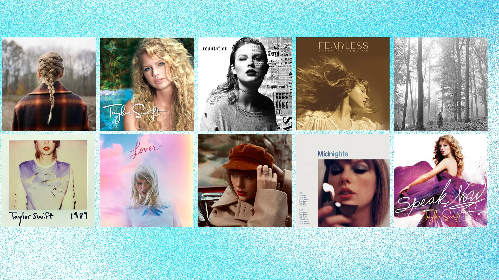
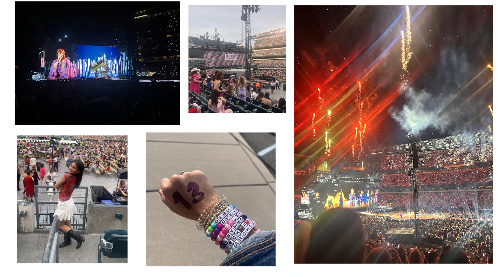

since the beginning of the year, the majority of my projects have been related to taylor swift
before showing you the project i made, here is a mini lesson on taylor

a few weeks ago i actually got to see her live!!

Go to my website and on my projects page, click on final project!
inspect the page to see my code for the project!